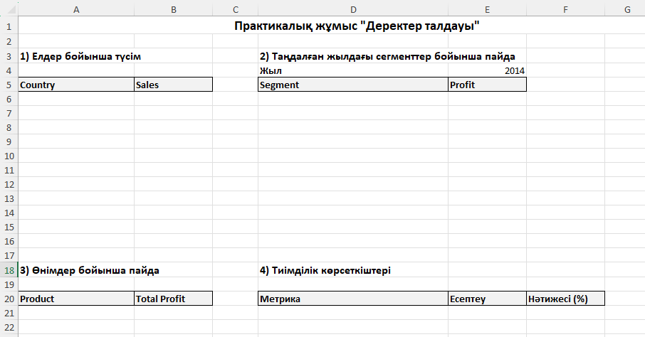
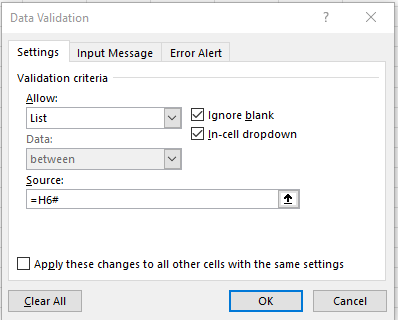
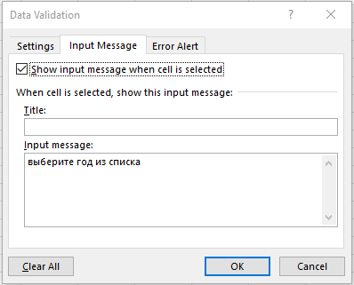
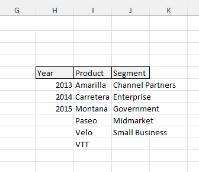
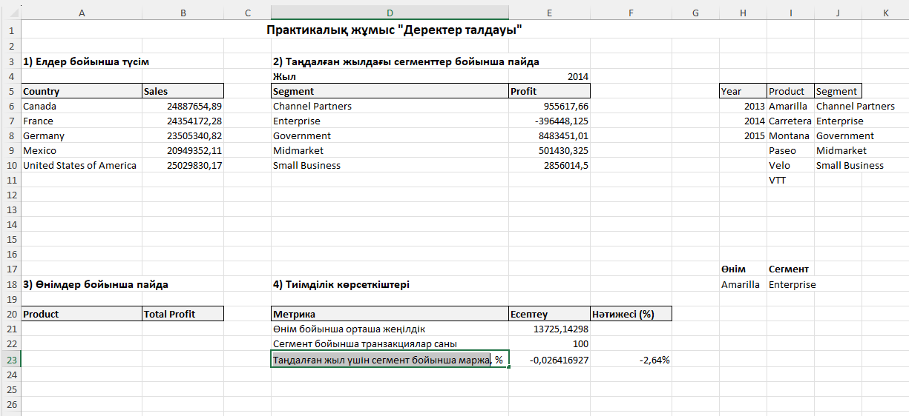

№ 6 зертханалық жұмыс
MS Excel құралдарымен экономикалық деректерді талдау
🎯 Жұмыстың мақсаты
Экономикалық деректерді дайындау, өңдеу және талдау үшін MS Excel бағдарламасының заманауи құралдарын меңгеру; қаржылық-экономикалық көрсеткіштерді есептеу және түсіндіру үшін құрылымдалған сілтемелерді, динамикалық массивтерді, шартты жинақтау функцияларын және деректерді тексеру элементтерін қолдануды үйрену.
✅ Күтілетін оқу нәтижелері
- экономикалық деректердің кестелік жиынын талдауға дайындай алуы;
- Excel бағдарламасының құрылымдалған кестесімен жұмыс істей алуы;
- есептелетін көрсеткіштерді құрып, құрылымдалған сілтемелерді пайдалана алуы;
- УНИКАЛЬНЫЕ (UNIQUE) және СОРТИРОВКА (SORT) функциялары арқылы динамикалық тізімдер жасай алуы;
- СУММЕСЛИМН (SUMIFS), СРЗНАЧЕСЛИМН (AVERAGEIFS), СЧЁТЕСЛИМН (COUNTIFS) функцияларын қолдана алуы;
- динамикалық ашылмалы тізімдер жасай алуы;
- бірнеше критерий бойынша талдау жүргізе алуы;
- тиімділік көрсеткіштерін есептей алуы;
- талдау параметрі таңдалғанда өзгеретін диаграммалар құра алуы;
- экономикалық талдау нәтижелерін түсіндіре алуы қажет.
📘 Қысқаша теориялық мәліметтер
1. Excel бағдарламасында экономикалық деректерді талдау
Экономикалық деректерді талдау бастапқы көрсеткіштер жиынын шешім қабылдауға жарамды ақпаратқа түрлендіруді көздейді. Бұл жұмыста елдер, сегменттер, өнімдер және басқа талдамалық белгілер бойынша сату мен пайда көрсеткіштерін қамтитын ресми Financial Sample деректер жиыны пайдаланылады.
2. Құрылымдалған кесте және құрылымдалған сілтемелер
Диапазонды Excel кестесіне түрлендіргеннен кейін формулаларда өріс атауларына сілтеме жасауға болады. Құрылымдалған сілтемедегі @ таңбасы тиісті бағанның ағымдағы жолдағы мәнін білдіреді.
=[@Sales]/[@[Units Sold]]Формуланың мағынасы: ағымдағы жолдағы Sales түсімін сол жолдағы Units Sold сатылған бірліктер санына бөлу. Атауында бос орын бар өріс үшін қос шаршы жақша қолданылады.
3. Динамикалық массивтер
УНИКАЛЬНЫЕ (UNIQUE) және СОРТИРОВКА (SORT) функциялары бірегей мәндердің сұрыпталған тізімін автоматты түрде алуға мүмкіндік береді. Бастапқы кесте өзгергенде бұл тізім де жаңартылады.
=СОРТИРОВКА(УНИКАЛЬНЫЕ(Financials[Country]))4. Шартты жинақтау
СУММЕСЛИМН (SUMIFS) бір немесе бірнеше шарт бойынша мәндерді қосады; СРЗНАЧЕСЛИМН (AVERAGEIFS) берілген критерийлер бойынша орташа мәнді есептейді; СЧЁТЕСЛИМН (COUNTIFS) шарттарға сәйкес жазбалар санын анықтайды.
5. Интерактивті талдау
Деректерді тексеру және ашылмалы тізімдер формулаларды өзгертпей-ақ талдау параметрін, мысалы жылды, өнімді немесе сегментті таңдауға мүмкіндік береді. Осыған байланысты есептеулер мен диаграммалар автоматты түрде жаңартылады.
💼 Практикалық жағдай
Талдаушы Financial Sample деректер жиыны негізінде компанияның қаржылық көрсеткіштерін зерттеуі тиіс: елдер бойынша түсімді анықтау, сегменттер мен өнімдердің пайдасын салыстыру, тиімділік көрсеткіштерін есептеу және интерактивті талдау элементтерін жасау. Нәтижелер талдау параметрлерін жылдам өзгертіп, кестелерді қолмен қайта есептемей жаңартылған көрсеткіштерді алуға мүмкіндік беруі керек.
🛠️ Жұмысты орындау тәртібі
1-тапсырма. Деректерді алу және дайындау
- Microsoft Learn сайтындағы «Download the Financial Sample Excel workbook» бетін ашып, Financial Sample файлын (әдетте financials.xlsx) жүктеп алып, сақтаңыз.
- Деректер жиыны Financials атауымен кесте түрінде рәсімделгеніне көз жеткізіңіз. Excel оны кесте ретінде танымаған болса, диапазонды белгілеңіз → Кірістіру → Кесте → «Тақырыптары бар кесте».
- Егер деректер парағының атауы басқа болса, оны Financials деп өзгертіңіз.
- Бағандардың деректер түрлерін тексеріңіз: күндер — «Күн», сандық өрістер — «Сан», мәтіндік өрістер — «Мәтін».
2-тапсырма. Есептелетін көрсеткіштерді жасау
Financials кестесіне үш есептелетін баған қосыңыз:
Average Unit Price: =[@Sales]/[@[Units Sold]]Discount Rate: =1-([@Sales]/[@[Gross Sales]])Margin %: =[@Profit]/[@Sales]Формулалардың құрылымдалған кестенің барлық жолдарына автоматты түрде таралатынын тексеріңіз. Discount Rate және Margin % бағандарына пайыздық пішімді орнатыңыз.
3-тапсырма. Analysis парағын жасау
Analysis (немесе «Аналитика») атты жаңа парақ жасап, елдер бойынша түсімді, сегменттер бойынша пайданы, өнімдер бойынша пайданы және тиімділік көрсеткіштерін талдауға арналған жұмыс аймақтарын дайындаңыз.

4-тапсырма. Елдер бойынша түсімді талдау
A6 ұяшығында елдердің динамикалық тізімін жасаңыз:
=СОРТИРОВКА(УНИКАЛЬНЫЕ(Financials[Country]))B6 ұяшығында A6-дағы елдің түсімін есептеп, формуланы төмен қарай көшіріңіз:
=СУММЕСЛИМН(Financials[Sales];Financials[Country];A6)Ағылшын тіліндегі нұсқасы: =SUMIFS(Financials[Sales];Financials[Country];A6)
5-тапсырма. Таңдалған жылдағы сегменттер бойынша пайданы талдау
Жылдар тізімінің көзі ретінде H6 ұяшығында сұрыпталған динамикалық тізім жасаңыз:
=СОРТИРОВКА(УНИКАЛЬНЫЕ(Financials[Year]))E4 ұяшығында «Жыл» ашылмалы тізімін жасаңыз: Деректер → Деректерді тексеру → Тізім. «Көз» өрісіне =H6# енгізіңіз. # таңбасы толық жайылған диапазонды білдіреді және тізімнің автоматты түрде кеңеюін қамтамасыз етеді.

Енгізу хабарламасы қойындысында «тізімнен жылды таңдаңыз» мәтінін көрсетіңіз.

D6 ұяшығында сегменттердің динамикалық тізімін жасаңыз:
=СОРТИРОВКА(УНИКАЛЬНЫЕ(Financials[Segment]))E6 ұяшығында таңдалған жыл үшін сегменттің пайдасын есептеңіз:
=СУММЕСЛИМН(Financials[Profit];Financials[Segment];D6;Financials[Year];$E$4)Формуланы төмен қарай көшіріңіз. E4 ұяшығында әртүрлі жылдарды таңдап, пайда мәндерінің қайта есептелетінін тексеріңіз. Тексеру үшін бастапқы Financials кестесін жыл мен сегмент бойынша сүзіп, Profit бағанының қосындысын алынған нәтижемен салыстырыңыз.
6-тапсырма. Динамикалық диаграмма құру
«Сегменттер бойынша пайда» кестесі негізінде Profit by Segment бағандық диаграммасын құрыңыз. E4 ұяшығындағы жыл өзгерген кезде диаграмма жаңартылған мәндерді көрсетуі тиіс.
7-тапсырма. Өнімдер бойынша пайданы талдау
Өз бетіңізше орындаңыз. «Өнімдер бойынша пайда» аймағында өнімдер тізімін жасап, меңгерілген функцияларды, динамикалық массивтерді және құрылымдалған сілтемелерді пайдаланып, әр өнімнің жалпы пайдасын есептеңіз. Нәтижелерді сұрыптаңыз немесе талдаңыз және пайдасы ең жоғары әрі ең төмен өнімдерді анықтаңыз.
8-тапсырма. Тиімділік көрсеткіштерін есептеу
Ашылмалы тізімдер үшін дереккөздерді дайындаңыз:
I6: =СОРТИРОВКА(УНИКАЛЬНЫЕ(Financials[Product]))J6: =СОРТИРОВКА(УНИКАЛЬНЫЕ(Financials[Segment]))
H18 және I18 ұяшықтарында тиісті жайылған диапазондарды пайдаланып, өнім мен сегментті таңдауға арналған ашылмалы тізімдер жасаңыз.
Таңдалған өнім бойынша орташа жеңілдікті есептеңіз:
=СРЗНАЧЕСЛИМН(Financials[Discounts];Financials[Product];$H$18)Таңдалған сегмент бойынша мәмілелер санын есептеңіз:
=СЧЁТЕСЛИМН(Financials[Segment];$I$18)Таңдалған жылдағы таңдалған сегменттің маржасын есептеңіз:
=СУММЕСЛИМН(Financials[Profit];Financials[Segment];$I$18;Financials[Year];$E$4) / СУММЕСЛИМН(Financials[Sales];Financials[Segment];$I$18;Financials[Year];$E$4)Алынған мәнге пайыздық пішімді орнатыңыз.
9-тапсырма. Нәтижелерді талдау
- ең жоғары түсім әкелетін елдерді анықтаңыз;
- сегменттер арасындағы пайданы салыстырыңыз;
- таңдалған жылдың нәтижелерге әсерін талдаңыз;
- пайдасы жоғары және төмен өнімдерді анықтаңыз;
- есептелген маржаны және басқа тиімділік көрсеткіштерін түсіндіріңіз;
- қысқаша экономикалық қорытынды жасаңыз.

📁 Жұмыс нәтижесіне қойылатын талаптар
- Financials бастапқы кестесі бар MS Excel файлы.
- Average Unit Price, Discount Rate және Margin % есептелетін бағандары.
- Елдер бойынша түсім талдауы бар Analysis парағы.
- Таңдалған жылдағы сегменттер бойынша пайда талдауы.
- Өнімдер бойынша өз бетінше орындалған пайда талдауы.
- Жылды, өнімді және сегментті таңдауға арналған динамикалық ашылмалы тізімдер.
- Орташа жеңілдікті, мәмілелер санын және маржаны есептеу.
- Profit by Segment динамикалық диаграммасы.
- Талдау нәтижелері бойынша қысқаша қорытынды.
Жұмысты қорғау кезінде студент практикалық жұмыстың орындалу барысын сипаттап, қолданылған функциялардың мақсатын түсіндіруі, өз бетінше орындалған тапсырмаларды көрсетуі және қорытынды жасауы тиіс.
❓ Бақылау сұрақтары
- Excel бағдарламасындағы құрылымдалған кесте дегеніміз не?
- Құрылымдалған сілтеме дегеніміз не?
- Құрылымдалған кесте формуласындағы @ таңбасы нені білдіреді?
- УНИКАЛЬНЫЕ (UNIQUE) және СОРТИРОВКА (SORT) функциялары не үшін қолданылады?
- Жайылған массив дегеніміз не?
- Жайылған диапазонға сілтемедегі # операторы нені білдіреді?
- СУММЕСЛИМН (SUMIFS) функциясы не үшін қолданылады?
- СРЗНАЧЕСЛИМН (AVERAGEIFS) функциясының СУММЕСЛИМН (SUMIFS) функциясынан айырмашылығы қандай?
- СЧЁТЕСЛИМН (COUNTIFS) функциясы не үшін қолданылады?
- Формулаларда абсолютті сілтемелер не үшін пайдаланылады?
- Excel бағдарламасында динамикалық ашылмалы тізімді қалай ұйымдастыруға болады?
- Таңдалған жылдың өзгеруі есептеулер мен диаграммаға қалай әсер етеді?
📊 Бағалау критерийлері
| Критерий | Балл |
|---|---|
| Бастапқы деректерді және Financials құрылымын дайындау | 10 |
| Есептелетін көрсеткіштерді жасау | 10 |
| Елдер бойынша түсімді талдау | 15 |
| Сегменттер мен жылдар бойынша пайданы талдау | 15 |
| Өнімдер бойынша пайданы өз бетінше талдау | 10 |
| Тиімділік көрсеткіштерін есептеу | 15 |
| Ашылмалы тізімдер және динамикалық диаграмма | 10 |
| Нәтижелерді талдау және экономикалық қорытынды | 10 |
| Жұмыс кітабын ұқыпты рәсімдеу және ұйымдастыру | 5 |
| Барлығы | 100 |
Келесі бөлімде біліміңізді интерактивті тест арқылы тексеріңіз.
Біліміңізді тексеріңіз
Орындаған зертханалық тапсырма бойынша сұрақтарға жауап беріңіз. Әр сұраққа бір дұрыс жауапты таңдаңыз.